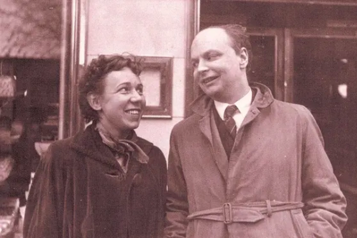
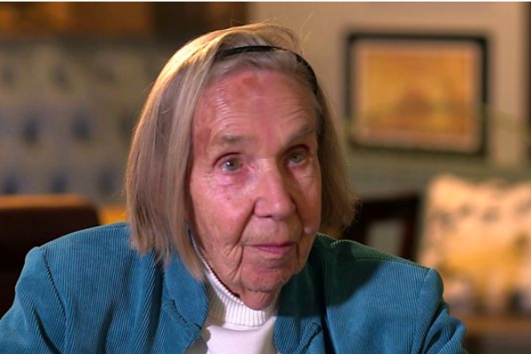
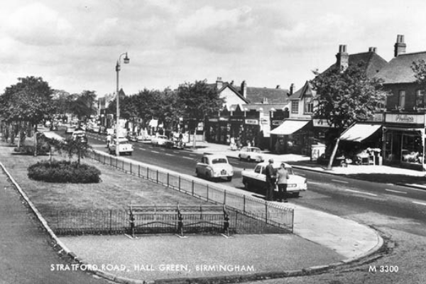
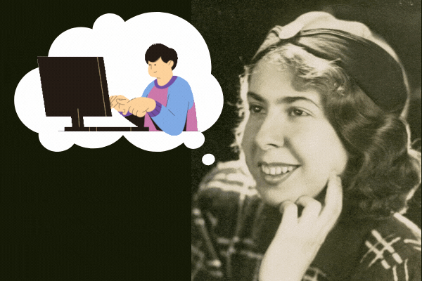

Mary and her husband, Conway Berners-Lee.

Mary lived until the ripe old age of 92.

Mary was born and raised in Hall Green, Birmingham.
Who was Mary-Lee Berners-Lee?
Mary Lee Berners-Lee (née Woods; 12 March 1924 – 29 November 2017) was an English mathematician and computer scientist who worked in a team that developed programs in the Department of Computer Science, University of Manchester Mark 1, Ferranti Mark 1 and Mark 1 Star computers. She was the mother of Sir Tim Berners-Lee, the inventor of the World Wide Web and Mike Berners-Lee, an English researcher and writer on greenhouse gases.